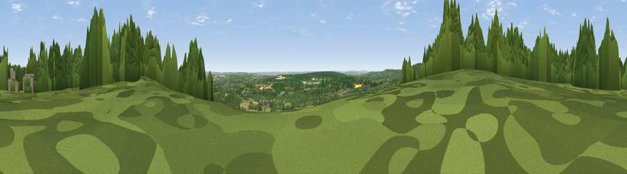

Viewpoint near Vigo Village
#12278 in England · top 2% of its area beats it · near Vigo Village · footpathWhere it is
The exact computed spot (TQ 64225 61275). Click the marker for map links.
Public access: a public right of way passes within 11 m of this spot. Computed from Natural England's CRoW access layer and OpenStreetMap rights of way — not the legal definitive map. Always verify locally.
The view, rendered

A 360° render of this exact spot computed from the terrain model, tree cover and land cover — summer colours, afternoon light, calibrated against photographs of famous viewpoints. Real trees, hedges and buildings will differ in detail.
The panorama
Grey silhouette: terrain skyline in each direction (720 bearings, Earth curvature and refraction included). Dashed green: skyline with trees (+15 m) and buildings (+8 m) as obstacles. Blue strip: how far the ground is visible on each bearing.
Where the view opens
Wedge length = distance to the farthest visible ground on that bearing (vegetation-aware). Rings at 10, 25 and 50 km.
What fills the view
35% grassland · 31% woodland · 31% cropland · 3% built-up
Angular shares of the visible panorama (visual magnitude), not map area. Landscape diversity 0.52 (0–1 Shannon).
Key numbers
More beautiful places nearby
The staircase of upgrades: each row has a higher view potential than everything closer. Driving times are estimates from straight-line distance, calibrated against real road routing — check an actual route before setting out.
| Place | Direction | Drive | Score |
|---|---|---|---|
| Viewpoint near Vigo Village | W · 0 km | ~2 min | 60.7 |
| Viewpoint near Birling | ENE · 3 km | ~7 min | 65.1 |
| Viewpoint near Shipbourne | SW · 11 km | ~21 min | 66.2 |
| Viewpoint near Charing | ESE · 32 km | ~50 min | 68.6 |
| Viewpoint near Westwell | ESE · 36 km | ~55 min | 72.2 |
| Viewpoint near Lympne | ESE · 52 km | ~74 min | 72.6 |
| Viewpoint near Fairlight | SSE · 54 km | ~76 min | 74.5 |
| Viewpoint near Fairlight | SSE · 54 km | ~76 min | 75.1 |
51.32687, 0.35569 · source: screening · position refined by local search. Computed location — check access rights before visiting.